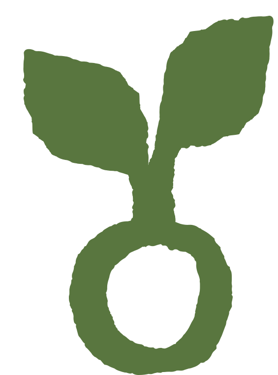

Por que Grão
Toda grande árvore começou pequena. Com marcas — e com a gente — não é diferente.
Toda grande árvore começou pequena. Começou como uma semente, precisou de tempo, cuidado, espaço e direção para crescer.
Com marcas, não é diferente. Mas entendemos que a comunicação se perdeu um pouco pelo caminho.
Em algum momento, deixamos de criar para conectar e começamos a criar para preencher. Mais conteúdo. Mais tendências. Mais velocidade. Mais alcance. E, no meio de tudo isso, menos significado.
Ideias que nascem, viralizam e desaparecem antes mesmo de criar raízes.
A Grão nasceu para lembrar que comunicação não é sobre falar mais. É sobre ter algo a dizer.
Não queremos colocar mais um conteúdo no meio do barulho. Queremos criar algo que faça alguém parar. Olhar. Sentir. Pensar. Se identificar. E, principalmente, se conectar.
Pois a comunicação também precisa de raízes antes de buscar frutos. Precisa de estratégia antes de velocidade. De identidade antes de tendência. De conexão antes de conversão.
Por isso, escolhemos ser Grão. Porque acreditamos no pequeno. No que ainda está começando. Nas marcas que não querem apenas acompanhar o mercado, mas ajudar a transformá-lo. Nos pequenos negócios que acreditam que podem fazer diferente. E em uma comunicação que ainda pode ser humana. Ainda pode ser criativa. Ainda pode ser relevante. Ainda pode conectar.
Ainda existe esperança para a comunicação. E talvez ela não esteja em criar mais. Talvez esteja em criar melhor. Talvez esteja em voltar às raízes.
Talvez toda mudança que precisamos ver no mundo comece exatamente assim: pequena. Como um grão.
De uma amizade para um propósito
A Grão nasceu de uma vontade simples: criar com sentido. Paulo carrega quase dez anos de estrada em marketing; Sinara trouxe uma virada de carreira e um olhar novo sobre criação. Juntos, transformaram uma amizade em agência — e uma inquietação com a comunicação vazia em um jeito diferente de fazer as coisas.
Somos uma agência recente, mas não improvisada. Nascemos com clareza do que não queremos ser.
Missão, visão e valores
Missão
Criar comunicação com propósito que conecta marcas a pessoas de verdade, indo além de métricas de ego e conteúdo enlatado.
Visão
Ser reconhecida como a agência que devolveu significado à comunicação de marcas que acreditam em fazer diferente.
Valores
Criatividade com raiz, respeito ao tempo e aos processos, disruptividade com propósito, acolhimento e conexão antes de conversão.
Quem faz acontecer

Paulo
CofundadorQuase dez anos de estrada em marketing, trazendo estratégia e visão de negócio pra cada projeto da Grão.
Sinara
CofundadoraEm transição de carreira, trouxe um olhar novo e sensível sobre criação — e a coragem de recomeçar com propósito.
Paulo
CofundadorQuase dez anos de estrada em marketing, trazendo estratégia e visão de negócio pra cada projeto da Grão.